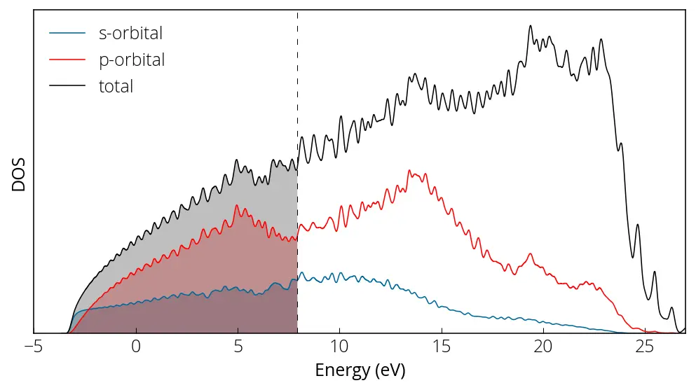

PDOS
Here we continue with our Aluminum example. Often it is needed to know the contribution from each individual atoms and/or each of their orbital contributions. We can achieve that using projwfc.x code. First, we must perform the self consistent field calculation followed by the non-self consistent field calculation with denser k-points.
pw.x < al_scf.in > al_scf.out
pw.x < al_nscf.in > al_nscf.outThen we prepare the input file for projwfc.x:
&PROJWFC
prefix= 'al',
outdir= '/tmp/',
filpdos= 'al_pdos.dat'
/Perform the calculation:
projwfc.x < al_projwfc.in > al_projwfc.outOutput data format: the DOS values are written in the file
{filpdos}.pdos_atm#N(X)_wfc#M(l), where N is atom number, X is atom
symbol, M is wfc number, and l=s,p,d,f one file for each atomic wavefunction
read from pseudopotential file. The header of file looks like (for spin
polarized calculations, we have separate up and down columns):
E LDOS(E) PDOS_1(E) ... PDOS_{2l+1}(E)\(LDOS = \sum\limits_{m=1}^{2l+1} PDOS_m (E)\)
\(PDOS_m (E) \rightarrow\) projected DOS on atomic wfc with component \(m\).
Orbital order:
-
for \(l=1\):
- \(p_z~(m=0)\)
- \(p_x\) (real combination of \(m=\pm 1\) with cosine)
- \(p_y\) (real combination of \(m=\pm 1\) with sine)
-
for \(l=2\):
- \(d_{z^2}~(m=0)\)
- \(d_{zx}\) (real combination of \(m=\pm 1\) with cosine)
- \(d_{zy}\) (real combination of \(m=\pm 1\) with sine)
- \(d_{x^2-y^2}\) (real combination of \(m=\pm 2\) with cosine)
- \(d_{xy}\) (real combination of \(m=\pm 2\) with sine)
For more details and PROJWFC output format, please consult the documentation here. Let's create our plots:
import matplotlib.pyplot as plt
from matplotlib import rcParamsDefault
import numpy as np
%matplotlib inline
# load data
def data_loader(fname):
import numpy as np
data = np.loadtxt(fname)
energy = data[:, 0]
pdos = data[:, 1] # ldos col, total contribution for a given orbital
return energy, pdos
energy, pdos_s = data_loader('../src/al/al_pdos.dat.pdos_atm#1(Al)_wfc#1(s)')
_, pdos_p = data_loader('../src/al/al_pdos.dat.pdos_atm#1(Al)_wfc#2(p)')
_, pdos_tot = data_loader('../src/al/al_pdos.dat.pdos_tot')
# make plots
plt.figure(figsize = (8, 4))
plt.plot(energy, pdos_s, linewidth=0.75, color='#006699', label='s-orbital')
plt.plot(energy, pdos_p, linewidth=0.75, color='r', label='p-orbital')
plt.plot(energy, pdos_tot, linewidth=0.75, color='k', label='total')
plt.yticks([])
plt.xlabel('Energy (eV)')
plt.ylabel('DOS')
plt.axvline(x= 7.9421, linewidth=0.5, color='k', linestyle=(0, (8, 10)))
plt.xlim(-5, 27)
plt.ylim(0, )
plt.fill_between(energy, 0, pdos_s, where=(energy < 7.9421), facecolor='#006699', alpha=0.25)
plt.fill_between(energy, 0, pdos_p, where=(energy < 7.9421), facecolor='r', alpha=0.25)
plt.fill_between(energy, 0, pdos_tot, where=(energy < 7.9421), facecolor='k', alpha=0.25)
# plt.text(6.5, 0.52, 'Fermi energy', fontsize= small, rotation=90)
plt.legend(frameon=False)
plt.show()Here is how our projected density of states plot looks like:

We can perform sums of specific atom or orbital contributions using sumpdos.x code if there are multiple \(s\) or \(p\) orbitals:
sumpdos.x *\(Al\)* > atom_Al_tot.dat
sumpdos.x *\(Al\)*\(s\) > atom_Al_s.dat
sumpdos.x *\(Al\)*\(p\) > atom_Al_p.datConteúdo adaptado de Projected Density of States, do Quantum Espresso Tutorial de Pranab Das, sob licença CC BY 4.0. Alterações: layout, título e navegação traduzidos para o português.